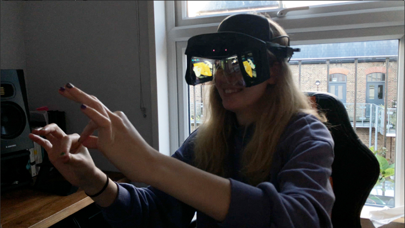
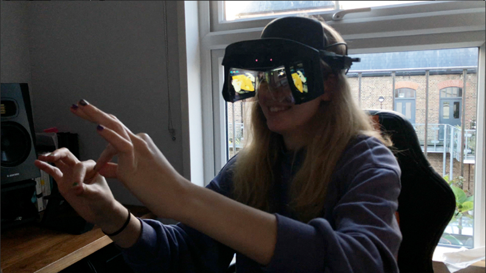

Resources
Project Outline: TEI '21 Student Consortium Paper
Headset Documentation: Project North Star
Community: Project North Star Discord Server
Repository: Project Esky Renderer
Summary
If an AR system can be thought of as one that combines real and virtual processes, is interactive in real-time, and is registered in three dimensions; why do we witness the majority of AR applications utilising primarily visual displays of information? I propose a practice-led compositional approach for developing ‘Multisensory Augmented Reality (MSAR) Experiences’, arguing that, as an medium that combines real and virtual multisensory processes, it must explored with a multisensory approach.
This project (northstar~) uses the open-souce Project North Star HMD from Leap Motion, whose general documentation can be found in the resources section. I am using the Project Esky MRTK Unity Implementation for building the software in Unity3D, which is developed by Damien Rompapas (massive thank you for all the hours you have spent helping me with errors and bugs).
This page outlines my use of the system which started around June of 2020 and is ongoing. To clarify, the original design has been open sourced by Leap Motion since 2018, but there have been a fair few community revisions and updates to the design (see more here). This page documents the development of the CombineReality Deck X version of the Project North Star HMD. CombineReality is run by Noah Zerkin, who has provided countless support to my own project, so thanks Noah! He's also pretty much the only inexpensive parts sourcer of the electrical bits needed for the headset.
Inspiration & Rationale (May - July 2020)
During the development of the pilot study for my PhD: the area~ system, I came across the open-source Project North Star AR headset. It had a very clear set of advantages detailed below:
Visual Display
- 2K resolution per-eye OLED displays
- Single-piece Combiner Lens
Tracking
- Hand Tracking (Ultraleap Stereo IR 170)
- 6DoF/SLAM (Intel T261)
Software
- Unity Implementation (Project Esky)
Miscellaneous
- Community of makers (>2000 people)
- Open-sourced design - ability to expand to other sensory modalities
- .stl files for 3D Printing
- Cheap in comparison to HL2 and ML-1
I therefore thought it would be a good platform to design my further studies with. Either in conjunction with wireless bone conduction headphones, or via desigining, 3D printing, and implementing a bone conduction solution for the headset.
Shopping List
£300 CombineReality Deck X Kit A (buy Kit B if you don't have access to a 3d printer for +£100)
£110 Intel T261
£100 Ultraleap Stereo IR 170 (or use a Leap Motion Controller if you already have one)
---
£510 Total Cost (£610 if you don't have access to a 3d printer)
Hardware Process (July - December 2020)
3D Printing
I started printing the parts (which are now available here) between July and September,
Electricals and Sensors
Building the headset involves assembling the electrical components and the sensors into the 3D printed parts. For the Deck X, these electrical components are:
- Intel T261 (6DOF Sensor)
- Ultraleap Stereo IR 170 (Hand Sensor)
- Display Board (The board which provides power to the two displays, and receives their signal via a mini Display Port cable)
-
CombineReality Integrator (CR's solution to reduce cables: in older iterations of the HMD, you needed a USB cable to power the display board as well as each of the sensors. This amounted to four cables. The Integrator 'integrates' everything with one unidirectional USB C - A cable.
- It contains a USB C hub to power and relay sensor data from two USB 3.1 and one USB 2.0 connectors
- Sends power to the Display Board via a connector and capacitor board.
- Contains a 3GB on-board flash drive
- Features an arduino-compoatible microcontroller (allows further sensors, and integrates the D-Pad on the lid)
- Power for a fan to cool the T261 and all other inner components
- Lid D-Pad (CR's 6 button solution to allow hassle-free calibration and easy resetting)
- Capacitor Board (to power the Display Board from the Integrator)
- Screens (two screens that add up to a 2880x1600 120Hz display extension to your computer)
Assembly
The full assembly guide for the CombineReality Deck X version of the North Star HMD is available here.
Software Process (May 2021 - Ongoing)
Initiation
Originally, my system was very temperatmental. After much deliberation, I realised I must have shorted some part of my integrator. After replacing it,
SDKs
Intel Realsense SDK
- Latest Intel RealSense SDK 2.0 - you're looking for an asset file like "Intel.RealSense.SDK-WIN10-2.47.0.3309.exe"
Ultraleap Gemini SDK
- Leap Developer Kit 5.0.0-preview+52386
- Leap Developer Kit 4.0.0+52238 - You need to rollback to this driver if you want to run Leap Motion example demonstrations such as Paint and Cubes